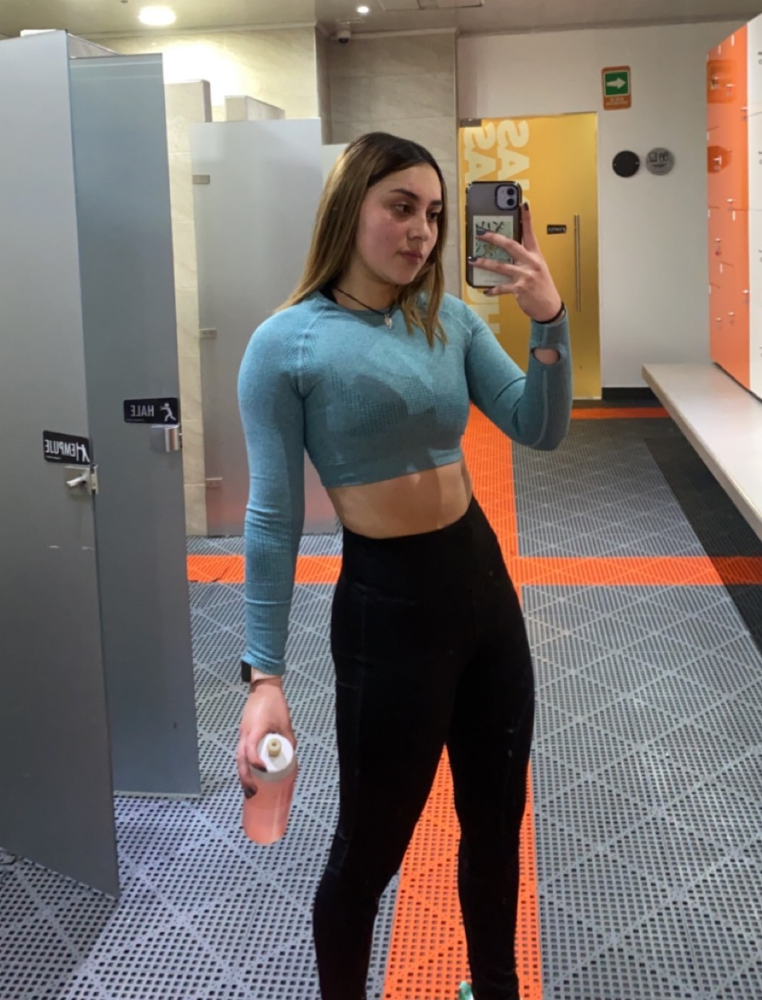
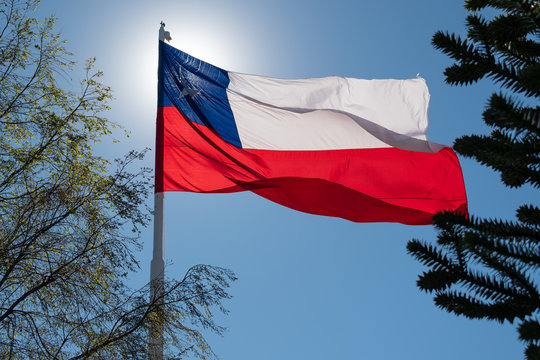

Soy Sara Valeria Piraquive, tengo 17 años, estudiante de ingeniería informática de la universidad de la Sabana. Nací en Bogotá pero actualmente vivo en Cajicá con mis papás y mi hermano, tengo una vida bastante agitada y con muchos cambios ya que he tenido que cambiarme varias veces de colegio, de casa, de país, etc, sin embargo, esto me ha permitido ser quién soy; una persona a la que le gusta aprender muchas cosas y destacarme en lo que hago, soy bastante competitiva, creativa y disciplinada. Los demás siempre me han considerado una persona extremadamente perfeccionista e impredecible, pues a veces mis gustos o mis actividades las mantengo de manera muy privada, por eso siempre hay algo que descubir de mí, de hecho considero que aún me quedan muchas cosas por descubrir, eso es lo interesante, la incertidumbre me causa curiosidad y siempre estoy pensando en el futuro, tal vez esta sea la razón más importante por la cual decidí estudiar una ingeniería.
Mis gustos y hobbies
He sido una persona muy artística y creativa pero no me gusta compartirlo con los demás, desde pequeña me ha gustado mucho el baile y el canto, lo he practicado toda mi vida de manera informal porque es algo que en realidad me gusta hacer cuando estoy aburrida, triste o enojada. También me gusta mucho la actividad física, me siento bien haciéndolo, siempre he tratado de entrenar y estar activa de cualquier forma; actualmente entreno 6 veces a la semana en el gimnasio. No soy una persona a la cual le apasione mucho leer, sin embargo, hay temas específicos que me encantan, como los libros de drama, romance o antropológicos, especialmente aquellos que se relacionan con la ciencia y la tecnología. También me gusta mucho escuchar música y estar con mi familia, prefiero quedarme en casa y estar conmigo misma antes que salir con amigos.

Mi pasado y experiencias
Desde muy pequeña recuerdo que siempre me gustó conocer lugares nuevos; a los 7 años me mudé de Bogotá a Santiago de Chile y comencé a estudiar allí, me gustó mucho porque pude conocer personas nuevas, ciudades con mucha cultura y comida rica. Adaptarme no fue un proceso muy largo porque me gustaba mucho la vida que tenía, pero al volver a Colombia me di cuenta de lo mucho que cambia todo de un lugar a otro. Estar 5 años en Chile me permitió tener una perspectiva diferente del mundo y de las personas, saber qué es mejor y qué estilo de vida me conviene más. Creo que de esta manera podré ser capaz de decidir mejor mi futuro y dejar el conformismo para luchar por lo que quiero.

Mi futuro y plan de acción
El futuro es algo en lo que siempre pienso pero me parece que es muy difícil predecir que sucederá exactamente o escoger desde ya el camino a tomar, sin embargo, tengo claro que en primer lugar quiero terminar el pregrado de ingeniería informática, me gustaría hacer una doble titulación con economía en la Universidad de la Sabana, creo que es una muy buena combinación que puede traer consigo excelentes resultados. Como propósitos de vida me gustaría mucho viajar por el mundo y conocer varios lugares, dominar más de dos idiomas y ser felíz con lo que sea que haga a futuro.